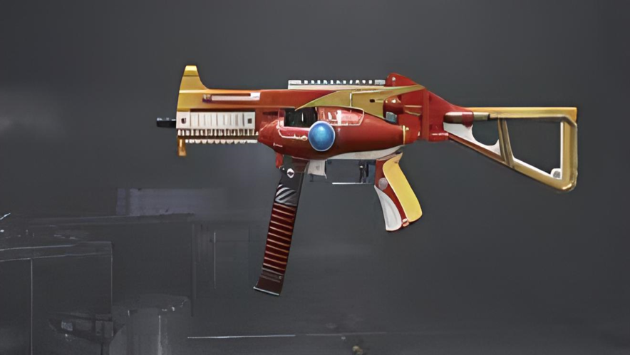
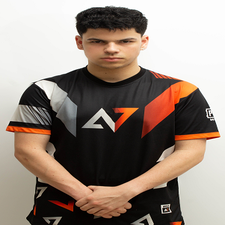

Descubre la emoción de la supervivencia en un mundo virtual: Juega PUBG Mobile.
Playerunknown's Battlegrounds Mobile es un juego móvil de supervivencia y combate autorizado oficialmente,que te
ofrece la experiencia de juego clásica 100% original de PUBG. Lánzate en paracaídas a la espectacular arena con
otros cientos de jugadores, experimenta trayectorias y controles de armas hiperrealistas, y explora montones de
elementos aleatorios y emocionantes en el campo de batalla del juego original en tu dispositivo móvil, disfruta de
mapas y edificios como en la vida real, vehículos que chocan con obstáculos de forma realista y efectos de sonido
3D superenvolventes.
En las siguientes secciones, podrás observar de manera más detallada los aspectos más importantes a tener en
cuenta si quieres jugar y adentrarte en el mundo de PUBG Mobile.
Modos de juego disponibles
Numerosos juegos para dispositivos móviles suelen volverse monótonos con rapidez, lo que puede
provocar que el jugador pierda interés. Sin embargo, PUBG Mobile procura brindar a sus usuarios una experiencia
variada, permitiéndoles optar por diferentes modos de juego en función de sus preferencias. A continuación, se
detallan las alternativas disponibles:
Battle Royale
Es el juego clásico de PUBG Mobile y el más popular en todo el mundo. Si eres un jugador
habitual, es
probable que estés familiarizado con este modo de juego. En él, hasta 100 jugadores son lanzados en uno de los
varios mapas disponibles y deben luchar hasta que solo quede un ganador. En cada zona de juego, el objetivo es
encontrar y eliminar a los enemigos, y para ello es posible aprovechar las estructuras disponibles para
defenderse de los ataques rivales.
Este modo es especialmente atractivo gracias a la opción de rankear y obtener puntos en cada partida. Este
puntaje dependerá de factores como ganar la partida, el número de eliminaciones, la posición en la que
quedaste respecto a los demás jugadores, entre otros. El puntaje te ayudará a escalar posiciones y estar en
diferentes rangos que van desde bronce 5 hasta Conquistador. Cabe mencionar que puedes jugar solo, en pareja o
en equipo con amigos. También puedes optar por jugar en primera o tercera persona, dependiendo de tus
preferencias. Es, sin duda, el modo de juego de disparos más destacado y uno de los más populares entre los
jugadores.
Arena
Actualmente existen los siguientes modos de juego en esta categoria:
Arena Suprema:
el primer equipo que gane 4 rondas saldra victorioso de la partida,cada ronda
se juega en un fragmento aleatorio del mapa, ademas en cada ronda podras comprar equipamiento y si te
eliminan en alguna ronda perderas tus armas.
Eliminación por Equipos:
el combate tiene reapariciones infinitas.El primer equipo que elimine el numero
requerido de enemigos en el tiempo establecido vencera, cada kill es un punto.
Juego de Armas:
el las armas iniciales son las mismas, pero se pueden mejorar al derrotar oponentes.
Gana el equipo que use el arma final, la sartén en el tiempo establecido.
Dominación:
el mapa se divide en dos equipos como en una partida 4vs4 Equipo Rojo vs Equipo Azul. El
mapa tiene 3 bases el primer equipo en capturar 2 bases obtendra la victoria.
Otros
Por otra parte, existen otros modos de juego como son los siguientes:
Partida Rapida:
reta a otros jugadores con reglas al azar que incluyen el uso de todas las
armas,combate cuerpo a cuerpo y el paraíso de objetos.
Payload:
tu misión es transportar o eliminar un vehículo que contenga una carga
específica.Puedes defenderte con coches blindados o helicópteros.
Entrenamiento de Francotirador:
este modo tiene como objetivo mejorar tu precisión con los rifles de francotirador.
Metro Royale:
se trata de un modo de juego recién añadido que tiene lugar en una línea de
metro abandonada.
Además de recoger suministros en la superficie, los jugadores pueden explorar el oscuro subsuelo en busca
de desafíos y recompensas únicas.
Vs Inteligencia Artificial:
consiste en formar un equipo de modo escuadron y asi enfrentar a bots que poseen un nivel de dificultad.
Guerra:
este modo es similar al clásico battle royale, pero con la diferencia de que reapareces continuamente.
Para ganar, tienes que eliminar enemigos y ganar puntos.
Armas mas imponentes y utilizadas en el meta
M416
Se trata de un arma que resulta muy útil en combates a corta distancia debido a su capacidad para
disparar numerosos proyectiles en un corto periodo de tiempo, y a que produce muy poco retroceso. Su modalidad
de disparo automático es muy efectiva y puede ser mejorada aún más con la incorporación de diversos
complementos.
Daño: 43
Calibre: 5.56 mm
Cadencia (segs entre disparos): 0,085
Modo de disparo: semiautomático, automático
Velocidad de la bala (mtrs por segundo): 880
Tamaño del cargador (básico y extendido): 30 - 40
Alcance (después de la máxima, se reduce la efectividad): 100 - 400
AKM
Es el rifle de asalto más poderoso, sin embargo, tiene una tasa muy baja de disparos es por esto que es
un arma buena para el combate cuerpo a cuerpo, puesto que sufre a media distancia.
Daño: 49
Calibre: 7.62 mm
Cadencia (segs entre disparos): 0,1
Modo de disparo: semiautomático, automático
Velocidad de la bala (mtrs por segundo): 715
Tamaño del cargador (básico y extendido): 30 - 40
Alcance (después de la máxima, se reduce la efectividad): 100 - 500
UMP-45
Es una herramienta de combate extremadamente ágil y versátil que tiene una alta capacidad de disparo. Aunque
su diseño inicial era para un calibre de 9mm, fue alterado para usar el calibre .45, lo que aumenta su
capacidad para detener a un objetivo. Debido a su fuerza y flexibilidad, esta herramienta es una excelente
opción para enfrentamientos a corta distancia.

Daño: 39
Calibre: .45 mm
Cadencia (segs entre disparos): 0,085
Velocidad de la bala (mtrs por segundo): 400
Tamaño del cargador (básico y extendido): 25 - 25
Modo de disparo: semiautomático, rafaga, automático
Alcance (después de la máxima, se reduce la efectividad): 100 - 300
DBS
Es un arma de corto alcance muy poderosa. Aunque tarda un poco más en disparar que otras armas, su
potencia de fuego es incomparable. Si alguien se encuentra al otro lado del cañón al dar la vuelta a una
esquina, lamentará su encuentro con la DBS, aunque paradójicamente no lo lamentará por mucho tiempo antes de
morir.
Daño: 26
Calibre: 12
Modo de disparo: semiautomático
Cadencia (segs entre disparos): 1
Tamaño del cargador (básico y extendido): 14
Alcance (después de la máxima, se reduce la efectividad): 0 - 100
AWM
El rifle británico es una herramienta que cuenta con una enorme potencia y precisión, puede mejorarse con
diferentes complementos para optimizar su efectividad en el campo de batalla. Es altamente recomendable para
los francotiradores debido a su gran eficacia en la distancia y precisión en los disparos. Vale la pena
destacar que el rifle británico solamente se consigue a través de suministros aéreos.
Daño: 105
Calibre: .300
Modo de disparo: semiautomático
Cadencia (segs entre disparos): 1,85
Velocidad de la bala (mtrs por segundo): 945
Tamaño del cargador (básico y extendido): 5 - 7
Alcance (después de la máxima, se reduce la efectividad): 100 - 800
Mapas de juego
Los mapas son un elemento crucial en cualquier juego de Battle Royale, y PUBG Mobile
no es la excepción. Sin
embargo, no todos los mapas son iguales y hay ciertos factores que los hacen destacar sobre otros. En este caso,
hay 4 mapas que destacan por encima del resto, estos mapas ofrecen una experiencia de juego única y
desafiante, con una combinación perfecta de terreno variado, estructuras y áreas de alta concentración.
Erangel
Erangel es el mapa principal puesto que fue el primero en ser desarrollado. Es una isla rusa ficticia situada
en el Mar Negro. La isla de 8X8 km fue previamente ocupada por las fuerzas soviéticas.
Ciudades mas importantes
GeorgopolNovorepnoyeSchoolMilitary BaseMiramar
Miramar es similar al diseño de Erangel al ser un mapa de 8x8 km, no obstante presenta
un paisaje desértico inspirado en el pais de Mexico.
Por otro lado, el mapa es conocido por su dificultad de navegación, con muchas montañas y dunas de arena, lo
que dificulta moverse sin ser detectado por los enemigos.
Ciudades mas importantes
Los LeonesChumaceraPrisonPuerto ParaisoSanhok
Sanhok fue el tercer mapa que se añadió al juego y es bastante conocido por ser uno de los mejores mapas. Ya
que al ser un terreno 4×4 km, Sanhok ofrece partidas mucho más rápidas e intensas al mismo tiempo.
Es una isla tropical ficticia inspirada en selvas e islas en Tailandia y Filipinas, que consta de tres islas
interconectadas por puentes.
Ciudades mas importantes
BootcampParadaise ResortPai nanQuarryVikendi
Vikendi es un mapa que ofrece una experiencia interesante y variada a los jugadores. En este mapa, se pueden
encontrar diferentes lugares que están claramente señalados, como el cosmódromo, el parque prehistórico de
dinosaurios y un castillo antiguo, lo que brinda muchas opciones de exploración.
El mapa al igual que sanhok es de 4x4 km, está cubierto de nieve, lo que añade un nuevo elemento al juego,
con huellas dejadas atrás y cazadores al acecho de sus presas.
Ciudades mas importantes
GorokaDino ParkCastleCosmodrome
Equipos mas poderosos del competitivo
Nova Esport
Es un equipo chino de élite de Peacekeeper. Este equipo gano 2 veces consecutivas la PUBG
MOBILE GLOBAL CHAMPIONSHIP (PMGC), la cual es el torneo más importante y del que todo jugador quiere del mundo
hablando de PUBG.En la edición mas reciente 2022 quedo en la posicion N° 9 siendo este su peor año. Cabe
mencionar que este equipo cuenta con los jugadores mejores pagados del competitivo de PUBG Mobile actualmente.
Stalwart Esports es una organización india, que actualmente compite en PUBG Mobile en la región de
Mongolia. En edición mas reciente del mundial o PMGC que se llevo acabo en el 2022 logro quedar en la
posicion
N° 4 siendo este su mejor año. Cabe resaltar que este equipo es muy conocido por poseer un poderio ofensivo
bastante agresivo.
Alpha 7 Esports es una organización brasileña, que actualmente compite en PUBG Mobile en la región de
brasil. En edición mas reciente del mundial (PMGC) que se llevo acabo en el 2022 logro quedar en la posicion
N° 3 siendo este su mejor año en esta competición. Cabe resaltar que, es la primera vez que un equipo del
continente suramericano logra estar en el top 3, puesto que, siempre era un equipo asiatico o europeo que
obtenia los primeros 5 lugares. En la actualidad es el mejor equipo del continente.
Roster actual
Roan Aléssio (Revo) Daniel vaz (Mafioso)

Lucas Carrilho (Carrilho)Alessandro Prado (SenaTexa)
Team Queso
Team Queso es una organización profesional española de esports, que actualmente opera en la región de
latinoamerica, mas especificamente en Argentina. su roster oficial cuenta con un Colombiano (Reyes), y
tres
chilenos (PapiPotro, Scream y Milovan).
En la edición mas reciente del mundial (PMGC) que se llevo acabo en el 2022 no logro quedar clasificado
para
la final. Sin embargo es el mejor equipo de latam, puesto que desde el 2019 ha estado presente en los
torneos
mas importantes